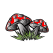

<!doctype html>
<html lang="en">
    <head>
        <meta charset="utf-8">
        <meta http-equiv="X-UA-Compatible" content="IE=edge">
        <meta name="viewport" content="initial-scale=1,user-scalable=no,maximum-scale=1,width=device-width">
        <meta name="mobile-web-app-capable" content="yes">
        <meta name="apple-mobile-web-app-capable" content="yes">
        <link rel="stylesheet" href="css/leaflet.css">
        <link rel="stylesheet" href="css/L.Control.Layers.Tree.css">
        <link rel="stylesheet" href="css/L.Control.Locate.min.css">
        <link rel="stylesheet" href="css/qgis2web.css">
        <link rel="stylesheet" href="css/fontawesome-all.min.css">
        <link rel="stylesheet" href="css/leaflet-search.css">
        <link rel="stylesheet" href="css/leaflet.photon.css">
        <link rel="stylesheet" href="css/leaflet-measure.css">
        <link rel="stylesheet" href="Leaflet.Coordinates-master/Leaflet.Coordinates-master/dist/Leaflet.Coordinates-0.1.5.css">	
		<link rel="stylesheet" href="Leaflet.Coordinates-master/Leaflet.Coordinates-master/dist/Leaflet.Coordinates-0.1.5.ie.css">
		
	
        <style>
        html, body, #map {
            width: 100%;
            height: 100%;
            padding: 0;
            margin: 0;
        }
        </style>
        <title>Fungi & Wildflowers of February (GG6544 CA2/3 M O'Loughlin)</title>
    </head>
    <body>
        <div id="map">
        </div>
        <script src="js/qgis2web_expressions.js"></script>
        <script src="js/leaflet.js"></script>
        <script src="js/L.Control.Layers.Tree.min.js"></script>
        <script src="js/L.Control.Locate.min.js"></script>
        <script src="js/multi-style-layer.js"></script>
        <script src="js/leaflet.rotatedMarker.js"></script>
        <script src="js/leaflet.pattern.js"></script>
        <script src="js/leaflet-hash.js"></script>
        <script src="js/Autolinker.min.js"></script>
        <script src="js/rbush.min.js"></script>
        <script src="js/labelgun.min.js"></script>
        <script src="js/labels.js"></script>
        <script src="js/leaflet.photon.js"></script>
        <script src="js/leaflet-measure.js"></script>
        <script src="js/leaflet-search.js"></script>
        <script src="data/Routes_2.js"></script>
        <script src="data/WildflowerFungiStands_3.js"></script>
        <script src="data/FebruaryFungi_4.js"></script>
        <script src="data/FebruaryWildflowers_5.js"></script>
        <script src="Leaflet.Coordinates-master/Leaflet.Coordinates-master/dist/Leaflet.Coordinates-0.1.5.src.js"></script>			
		

		
        <script>
        var map = L.map('map', {
            zoomControl:false, maxZoom:28, minZoom:1
        }).fitBounds([[53.12122350720844,-7.275636459162171],[53.36210739383834,-6.731892811590989]]);

		//Coordinates
		L.control.coordinates({
			position: "bottomleft",
			useDMS: false,
			labelTemplateLat:"N {y}",
			labelTemplateLng:"E {x}",
			useLatLngOrder:true
		}).addTo(map);
		
        var hash = new L.Hash(map);
        map.attributionControl.setPrefix('<a href="https://github.com/tomchadwin/qgis2web" target="_blank">qgis2web</a> &middot; <a href="https://leafletjs.com" title="A JS library for interactive maps">Leaflet</a> &middot; <a href="https://qgis.org">QGIS</a>');
        var autolinker = new Autolinker({truncate: {length: 30, location: 'smart'}});
        // remove popup's row if "visible-with-data"
        function removeEmptyRowsFromPopupContent(content, feature) {
         var tempDiv = document.createElement('div');
         tempDiv.innerHTML = content;
         var rows = tempDiv.querySelectorAll('tr');
         for (var i = 0; i < rows.length; i++) {
             var td = rows[i].querySelector('td.visible-with-data');
             var key = td ? td.id : '';
             if (td && td.classList.contains('visible-with-data') && feature.properties[key] == null) {
                 rows[i].parentNode.removeChild(rows[i]);
             }
         }
         return tempDiv.innerHTML;
        }
        // modify popup if contains media
        function addClassToPopupIfMedia(content, popup) {
            var tempDiv = document.createElement('div');
            tempDiv.innerHTML = content;
            var imgTd = tempDiv.querySelector('td img');
            if (imgTd) {
                var src = imgTd.getAttribute('src');
                if (/\.(jpg|jpeg|png|gif|bmp|webp|avif)$/i.test(src)) {
                    popup._contentNode.classList.add('media');
                    setTimeout(function() {
                        popup.update();
                    }, 10);
                } else if (/\.(mp3|wav|ogg|aac)$/i.test(src)) {
                    var audio = document.createElement('audio');
                    audio.controls = true;
                    audio.src = src;
                    imgTd.parentNode.replaceChild(audio, imgTd);
                    popup._contentNode.classList.add('media');
                    setTimeout(function() {
                        popup.setContent(tempDiv.innerHTML);
                        popup.update();
                    }, 10);
                } else if (/\.(mp4|webm|ogg|mov)$/i.test(src)) {
                    var video = document.createElement('video');
                    video.controls = true;
                    video.src = src;
                    video.style.width = "400px";
                    video.style.height = "300px";
                    video.style.maxHeight = "60vh";
                    video.style.maxWidth = "60vw";
                    imgTd.parentNode.replaceChild(video, imgTd);
                    popup._contentNode.classList.add('media');
                    // Aggiorna il popup quando il video carica i metadati
                    video.addEventListener('loadedmetadata', function() {
                        popup.update();
                    });
                    setTimeout(function() {
                        popup.setContent(tempDiv.innerHTML);
                        popup.update();
                    }, 10);
                } else {
                    popup._contentNode.classList.remove('media');
                }
            } else {
                popup._contentNode.classList.remove('media');
            }
        }
        var title = new L.Control({'position':'topright'});
        title.onAdd = function (map) {
            this._div = L.DomUtil.create('div', 'info');
            this.update();
            return this._div;
        };
        title.update = function () {
            this._div.innerHTML = '<h2>Fungi & Wildflowers of February (GG6544 CA2/3 M O\'Loughlin)</h2>';
        };
        title.addTo(map);
        var abstract = new L.Control({'position':'topright'});
        abstract.onAdd = function (map) {
            this._div = L.DomUtil.create('div',
            'leaflet-control abstract');
            this._div.id = 'abstract'
                this._div.setAttribute("onmouseenter", "abstract.show()");
                this._div.setAttribute("onmouseleave", "abstract.hide()");
                this.hide();
                return this._div;
            };
            abstract.hide = function () {
                this._div.classList.remove("abstractUncollapsed");
                this._div.classList.add("abstract");
                this._div.innerHTML = 'i'
            }
            abstract.show = function () {
                this._div.classList.remove("abstract");
                this._div.classList.add("abstractUncollapsed");
                this._div.innerHTML = 'This map of the February woodland surveys in Laois and Kildare shows point records of wildflowers and fungi collected using QField, overlaid with mapped wildflower stands and the routes walked during each survey. The point data highlight early‑season species emerging along woodland floors, while polygon features outline larger continuous patches of ground flora / fungi such as ramsons and other spring indicators. The survey routes provide spatial context for coverage, showing where effort was concentrated. This combined view offers an early snapshot of woodland biodiversity patterns across the selected sites.';
        };
        abstract.addTo(map);
        var zoomControl = L.control.zoom({
            position: 'topleft'
        }).addTo(map);
        L.control.locate({locateOptions: {maxZoom: 19}}).addTo(map);
        var measureControl = new L.Control.Measure({
            position: 'topleft',
            primaryLengthUnit: 'meters',
            secondaryLengthUnit: 'kilometers',
            primaryAreaUnit: 'sqmeters',
            secondaryAreaUnit: 'hectares'
        });
        measureControl.addTo(map);
        document.getElementsByClassName('leaflet-control-measure-toggle')[0].innerHTML = '';
        document.getElementsByClassName('leaflet-control-measure-toggle')[0].className += ' fas fa-ruler';
        var bounds_group = new L.featureGroup([]);
        function setBounds() {
        }
        map.createPane('pane_GoogleSatellite_0');
        map.getPane('pane_GoogleSatellite_0').style.zIndex = 400;
        var layer_GoogleSatellite_0 = L.tileLayer('https://mt1.google.com/vt/lyrs=s&x={x}&y={y}&z={z}', {
            pane: 'pane_GoogleSatellite_0',
            opacity: 1.0,
            attribution: '<a href="https://www.google.at/permissions/geoguidelines/attr-guide.html">Map data ©2015 Google</a>',
            minZoom: 1,
            maxZoom: 28,
            minNativeZoom: 0,
            maxNativeZoom: 20
        });
        layer_GoogleSatellite_0;
        map.createPane('pane_OSMStandard_1');
        map.getPane('pane_OSMStandard_1').style.zIndex = 401;
        var layer_OSMStandard_1 = L.tileLayer('https://tile.openstreetmap.org/{z}/{x}/{y}.png', {
            pane: 'pane_OSMStandard_1',
            opacity: 1.0,
            attribution: '<a href="https://www.openstreetmap.org/copyright">© OpenStreetMap contributors, CC-BY-SA</a>',
            minZoom: 1,
            maxZoom: 28,
            minNativeZoom: 0,
            maxNativeZoom: 19
        });
        layer_OSMStandard_1;
        map.addLayer(layer_OSMStandard_1);
        function pop_Routes_2(feature, layer) {
            var popupContent = '<table>\
                    <tr>\
                        <td colspan="2"><strong>Length of Route</strong><br />' + (feature.properties['Length'] !== null ? autolinker.link(String(feature.properties['Length']).replace(/'/g, '\'').toLocaleString()) : '') + '</td>\
                    </tr>\
                    <tr>\
                        <td colspan="2"><strong>Date of Survey</strong><br />' + (feature.properties['Date'] !== null ? autolinker.link(String(feature.properties['Date']).replace(/'/g, '\'').toLocaleString()) : '') + '</td>\
                    </tr>\
                    <tr>\
                        <td colspan="2"><strong>Location of Survey</strong><br />' + (feature.properties['Location'] !== null ? autolinker.link(String(feature.properties['Location']).replace(/'/g, '\'').toLocaleString()) : '') + '</td>\
                    </tr>\
                </table>';
            var content = removeEmptyRowsFromPopupContent(popupContent, feature);
			layer.on('popupopen', function(e) {
				addClassToPopupIfMedia(content, e.popup);
			});
			layer.bindPopup(content, { maxHeight: 400 });
        }

        function style_Routes_2_0() {
            return {
                pane: 'pane_Routes_2',
                opacity: 1,
                color: 'rgba(0,0,0,1.0)',
                dashArray: '',
                lineCap: 'round',
                lineJoin: 'round',
                weight: 5.0,
                fillOpacity: 0,
                interactive: true,
            }
        }
        function style_Routes_2_1() {
            return {
                pane: 'pane_Routes_2',
                opacity: 1,
                color: 'rgba(255,255,255,1.0)',
                dashArray: '',
                lineCap: 'round',
                lineJoin: 'round',
                weight: 3.0,
                fillOpacity: 0,
                interactive: true,
            }
        }
        map.createPane('pane_Routes_2');
        map.getPane('pane_Routes_2').style.zIndex = 402;
        map.getPane('pane_Routes_2').style['mix-blend-mode'] = 'normal';
        var layer_Routes_2 = new L.geoJson.multiStyle(json_Routes_2, {
            attribution: '',
            interactive: true,
            dataVar: 'json_Routes_2',
            layerName: 'layer_Routes_2',
            pane: 'pane_Routes_2',
            onEachFeature: pop_Routes_2,
            styles: [style_Routes_2_0,style_Routes_2_1,]
        });
        bounds_group.addLayer(layer_Routes_2);
        map.addLayer(layer_Routes_2);
        function pop_WildflowerFungiStands_3(feature, layer) {
            var popupContent = '<table>\
                    <tr>\
                        <td colspan="2">' + (feature.properties['fid'] !== null ? autolinker.link(String(feature.properties['fid']).replace(/'/g, '\'').toLocaleString()) : '') + '</td>\
                    </tr>\
                    <tr>\
                        <td class="visible-with-data" id="Fungi_Plant_Name" colspan="2"><strong>Wildflower / Fungi</strong><br />' + (feature.properties['Fungi_Plant_Name'] !== null ? autolinker.link(String(feature.properties['Fungi_Plant_Name']).replace(/'/g, '\'').toLocaleString()) : '') + '</td>\
                    </tr>\
                    <tr>\
                        <td class="visible-with-data" id="Area" colspan="2"><strong>Area of Stand</strong><br />' + (feature.properties['Area'] !== null ? autolinker.link(String(feature.properties['Area']).replace(/'/g, '\'').toLocaleString()) : '') + '</td>\
                    </tr>\
                    <tr>\
                        <td class="visible-with-data" id="Count" colspan="2"><strong>Approximate Count</strong><br />' + (feature.properties['Count'] !== null ? autolinker.link(String(feature.properties['Count']).replace(/'/g, '\'').toLocaleString()) : '') + '</td>\
                    </tr>\
                    <tr>\
                        <td class="visible-with-data" id="Density" colspan="2"><strong>Density</strong><br />' + (feature.properties['Density'] !== null ? autolinker.link(String(feature.properties['Density']).replace(/'/g, '\'').toLocaleString()) : '') + '</td>\
                    </tr>\
                    <tr>\
                        <td class="visible-with-data" id="Photo" colspan="2"><strong>Photo</strong><br />' + (feature.properties['Photo'] !== null ? '' : '') + '</td>\
                    </tr>\
                </table>';
            var content = removeEmptyRowsFromPopupContent(popupContent, feature);
			layer.on('popupopen', function(e) {
				addClassToPopupIfMedia(content, e.popup);
			});
			layer.bindPopup(content, { maxHeight: 400 });
        }

        function style_WildflowerFungiStands_3_0() {
            return {
                pane: 'pane_WildflowerFungiStands_3',
                opacity: 1,
                color: 'rgba(56,71,54,1.0)',
                dashArray: '',
                lineCap: 'butt',
                lineJoin: 'miter',
                weight: 2.0, 
                fill: true,
                fillOpacity: 1,
                fillColor: 'rgba(57,175,74,0.6980392156862745)',
                interactive: true,
            }
        }
        map.createPane('pane_WildflowerFungiStands_3');
        map.getPane('pane_WildflowerFungiStands_3').style.zIndex = 403;
        map.getPane('pane_WildflowerFungiStands_3').style['mix-blend-mode'] = 'normal';
        var layer_WildflowerFungiStands_3 = new L.geoJson(json_WildflowerFungiStands_3, {
            attribution: '',
            interactive: true,
            dataVar: 'json_WildflowerFungiStands_3',
            layerName: 'layer_WildflowerFungiStands_3',
            pane: 'pane_WildflowerFungiStands_3',
            onEachFeature: pop_WildflowerFungiStands_3,
            style: style_WildflowerFungiStands_3_0,
        });
        bounds_group.addLayer(layer_WildflowerFungiStands_3);
        map.addLayer(layer_WildflowerFungiStands_3);
        function pop_FebruaryFungi_4(feature, layer) {
            var popupContent = '<table>\
                    <tr>\
                        <td colspan="2"><strong>Name</strong><br />' + (feature.properties['Name'] !== null ? autolinker.link(String(feature.properties['Name']).replace(/'/g, '\'').toLocaleString()) : '') + '</td>\
                    </tr>\
                    <tr>\
                        <td colspan="2"><strong>Binomial Nomenclature</strong><br />' + (feature.properties['Binomial_Name'] !== null ? autolinker.link(String(feature.properties['Binomial_Name']).replace(/'/g, '\'').toLocaleString()) : '') + '</td>\
                    </tr>\
                    <tr>\
                        <td colspan="2"><strong>Description</strong><br />' + (feature.properties['Species_Description'] !== null ? autolinker.link(String(feature.properties['Species_Description']).replace(/'/g, '\'').toLocaleString()) : '') + '</td>\
                    </tr>\
                    <tr>\
                        <td colspan="2"><strong>Location</strong><br />' + (feature.properties['Site_Description'] !== null ? autolinker.link(String(feature.properties['Site_Description']).replace(/'/g, '\'').toLocaleString()) : '') + '</td>\
                    </tr>\
                    <tr>\
                        <td colspan="2"><strong>Substrate</strong><br />' + (feature.properties['Substrate'] !== null ? autolinker.link(String(feature.properties['Substrate']).replace(/'/g, '\'').toLocaleString()) : '') + '</td>\
                    </tr>\
                    <tr>\
                        <td colspan="2"><strong>Associated Tree</strong><br />' + (feature.properties['Type_of_Tree'] !== null ? autolinker.link(String(feature.properties['Type_of_Tree']).replace(/'/g, '\'').toLocaleString()) : '') + '</td>\
                    </tr>\
                    <tr>\
                        <td colspan="2"><strong>Features</strong><br />' + (feature.properties['Fruiting_Body_Features'] !== null ? autolinker.link(String(feature.properties['Fruiting_Body_Features']).replace(/'/g, '\'').toLocaleString()) : '') + '</td>\
                    </tr>\
                    <tr>\
                        <td colspan="2"><strong>Photo</strong><br />' + (feature.properties['Photo'] !== null ? '' : '') + '</td>\
                    </tr>\
                    <tr>\
                        <td colspan="2"><strong>Date of Survey</strong><br />' + (feature.properties['Date_of_Capture'] !== null ? autolinker.link(String(feature.properties['Date_of_Capture']).replace(/'/g, '\'').toLocaleString()) : '') + '</td>\
                    </tr>\
                </table>';
            var content = removeEmptyRowsFromPopupContent(popupContent, feature);
			layer.on('popupopen', function(e) {
				addClassToPopupIfMedia(content, e.popup);
			});
			layer.bindPopup(content, { maxHeight: 400 });
        }

        function style_FebruaryFungi_4_0() {
            return {
                pane: 'pane_FebruaryFungi_4',
        rotationAngle: 0.0,
        rotationOrigin: 'center center',
        icon: L.icon({
            iconUrl: 'markers/FebruaryFungi_4.svg',
            iconSize: [45.599999999999994, 45.599999999999994]
        }),
                interactive: true,
            }
        }
        map.createPane('pane_FebruaryFungi_4');
        map.getPane('pane_FebruaryFungi_4').style.zIndex = 404;
        map.getPane('pane_FebruaryFungi_4').style['mix-blend-mode'] = 'normal';
        var layer_FebruaryFungi_4 = new L.geoJson(json_FebruaryFungi_4, {
            attribution: '',
            interactive: true,
            dataVar: 'json_FebruaryFungi_4',
            layerName: 'layer_FebruaryFungi_4',
            pane: 'pane_FebruaryFungi_4',
            onEachFeature: pop_FebruaryFungi_4,
            pointToLayer: function (feature, latlng) {
                var context = {
                    feature: feature,
                    variables: {}
                };
                return L.marker(latlng, style_FebruaryFungi_4_0(feature));
            },
        });
        bounds_group.addLayer(layer_FebruaryFungi_4);
        map.addLayer(layer_FebruaryFungi_4);
        function pop_FebruaryWildflowers_5(feature, layer) {
            var popupContent = '<table>\
                    <tr>\
                        <td class="visible-with-data" id="Name" colspan="2"><strong>Name</strong><br />' + (feature.properties['Name'] !== null ? autolinker.link(String(feature.properties['Name']).replace(/'/g, '\'').toLocaleString()) : '') + '</td>\
                    </tr>\
                    <tr>\
                        <td class="visible-with-data" id="Binomial_Name" colspan="2"><strong>Binomial Nomenclature</strong><br />' + (feature.properties['Binomial_Name'] !== null ? autolinker.link(String(feature.properties['Binomial_Name']).replace(/'/g, '\'').toLocaleString()) : '') + '</td>\
                    </tr>\
                    <tr>\
                        <td class="visible-with-data" id="Species_Description" colspan="2"><strong>Description</strong><br />' + (feature.properties['Species_Description'] !== null ? autolinker.link(String(feature.properties['Species_Description']).replace(/'/g, '\'').toLocaleString()) : '') + '</td>\
                    </tr>\
                    <tr>\
                        <td class="visible-with-data" id="Site_Description" colspan="2"><strong>Location</strong><br />' + (feature.properties['Site_Description'] !== null ? autolinker.link(String(feature.properties['Site_Description']).replace(/'/g, '\'').toLocaleString()) : '') + '</td>\
                    </tr>\
                    <tr>\
                        <td class="visible-with-data" id="Substrate" colspan="2"><strong>Substrate</strong><br />' + (feature.properties['Substrate'] !== null ? autolinker.link(String(feature.properties['Substrate']).replace(/'/g, '\'').toLocaleString()) : '') + '</td>\
                    </tr>\
                    <tr>\
                        <td class="visible-with-data" id="Photo" colspan="2"><strong>Photo</strong><br />' + (feature.properties['Photo'] !== null ? '' : '') + '</td>\
                    </tr>\
                    <tr>\
                        <td class="visible-with-data" id="Date_Of_Capture" colspan="2"><strong>Date of Survey</strong><br />' + (feature.properties['Date_Of_Capture'] !== null ? autolinker.link(String(feature.properties['Date_Of_Capture']).replace(/'/g, '\'').toLocaleString()) : '') + '</td>\
                    </tr>\
                </table>';
            var content = removeEmptyRowsFromPopupContent(popupContent, feature);
			layer.on('popupopen', function(e) {
				addClassToPopupIfMedia(content, e.popup);
			});
			layer.bindPopup(content, { maxHeight: 400 });
        }

        function style_FebruaryWildflowers_5_0() {
            return {
                pane: 'pane_FebruaryWildflowers_5',
        rotationAngle: 0.0,
        rotationOrigin: 'center center',
        icon: L.icon({
            iconUrl: 'markers/FebruaryWildflowers_5.svg',
            iconSize: [26.599999999999998, 26.599999999999998]
        }),
                interactive: true,
            }
        }
        map.createPane('pane_FebruaryWildflowers_5');
        map.getPane('pane_FebruaryWildflowers_5').style.zIndex = 405;
        map.getPane('pane_FebruaryWildflowers_5').style['mix-blend-mode'] = 'normal';
        var layer_FebruaryWildflowers_5 = new L.geoJson(json_FebruaryWildflowers_5, {
            attribution: '',
            interactive: true,
            dataVar: 'json_FebruaryWildflowers_5',
            layerName: 'layer_FebruaryWildflowers_5',
            pane: 'pane_FebruaryWildflowers_5',
            onEachFeature: pop_FebruaryWildflowers_5,
            pointToLayer: function (feature, latlng) {
                var context = {
                    feature: feature,
                    variables: {}
                };
                return L.marker(latlng, style_FebruaryWildflowers_5_0(feature));
            },
        });
        bounds_group.addLayer(layer_FebruaryWildflowers_5);
        map.addLayer(layer_FebruaryWildflowers_5);
        var overlaysTree = [
            {label: ' February Wildflowers', layer: layer_FebruaryWildflowers_5},
            {label: ' February Fungi', layer: layer_FebruaryFungi_4},
            {label: ' Wildflower / Fungi Stands', layer: layer_WildflowerFungiStands_3},
            {label: ' Routes', layer: layer_Routes_2},
            {label: "OSM Standard", layer: layer_OSMStandard_1},
            {label: "Google Satellite", layer: layer_GoogleSatellite_0},]
        var lay = L.control.layers.tree(null, overlaysTree,{
            //namedToggle: true,
            //selectorBack: false,
            //closedSymbol: '&#8862; &#x1f5c0;',
            //openedSymbol: '&#8863; &#x1f5c1;',
            //collapseAll: 'Collapse all',
            //expandAll: 'Expand all',
            collapsed: true,
        });
        lay.addTo(map);
        setBounds();
        map.addControl(new L.Control.Search({
            layer: layer_FebruaryFungi_4,
            initial: false,
            hideMarkerOnCollapse: true,
            propertyName: 'Name'}));
        if (typeof url === 'undefined') {
            document.getElementsByClassName('search-button')[0].className += ' fa fa-binoculars';
        } else {
            document.getElementsByClassName('search-button')[1].className += ' fa fa-binoculars';
        }
		var linkControl = L.control({position: 'bottomright'});
		linkControl.onAdd = function(map) {
			var div = L.DomUtil.create('div', 'info legend');
			div.innerHTML = '<a href="https://www.facebook.com/groups/1431909853617055/" target="_blank" class="button">Mushroom Foraging Ireland on Facebook</a>';
			return div;
		};

		linkControl.addTo(map);	
		var linkControl = L.control({position: 'bottomright'});
		linkControl.onAdd = function(map) {
			var div = L.DomUtil.create('div', 'info legend');
			div.innerHTML = '<a href="https://www.wildflowersofireland.net/" target="_blank" class="button">Wildflowers of Ireland</a>';
			return div;
		};

		linkControl.addTo(map);		
		var linkControl = L.control({position: 'bottomright'});
		linkControl.onAdd = function(map) {
			var div = L.DomUtil.create('div', 'info legend');
			div.innerHTML = '<a href="https://www.first-nature.com/fungi/" target="_blank" class="button">First Nature</a>';
			return div;
		};

		linkControl.addTo(map);	

		L.control.scale({
			metric: true,
			imperial: true,
			maxWidth: 100,
			position: 'bottomleft'
		}).addTo(map);
		
// Reset extent control
var extentControl = L.Control.extend({
    options: { position: 'topleft' },

    onAdd: function (map) {
        var llBounds = map.getBounds();
        var container = L.DomUtil.create('div', 'extentControl');

        container.innerHTML = '<i class="fas fa-home"></i>';

        container.style.width = "35px";
        container.style.height = "35px";
        container.style.background = "#e6f2e6";
        container.style.border = ".1px solid #666";
        container.style.borderRadius = "4px";
        container.style.cursor = "pointer";
        container.style.display = "flex";
        container.style.alignItems = "center";
        container.style.justifyContent = "center";

        container.onclick = function () {
            map.fitBounds(llBounds);
        };

        return container;
    }
});

map.addControl(new extentControl());

		
        </script>   
		<style>
.button {
    background: #c1e6c2;
    color: white;
    padding: 6px 10px;
    text-decoration: none;
    border-radius: 4px;
    font-size: 14px;
}
</style>
    </body>
</html>


